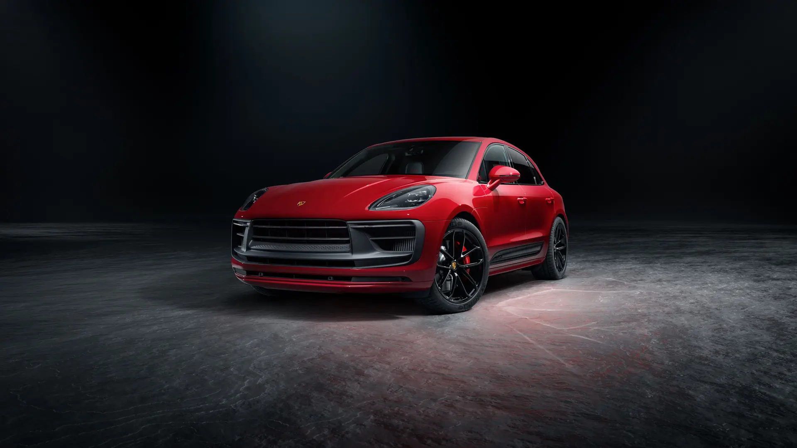

<!DOCTYPE html>
<html lang="ko">

<head>
    <meta charset="UTF-8">
    <meta http-equiv="X-UA-Compatible" content="IE=edge">
    <meta name="viewport" content="width=device-width, initial-scale=1.0">
    <title>rolls-royce</title>
    <link rel="stylesheet" href="./css/mainCss.css">
</head>

<body style="margin: 0 auto;">
    <!-- 해당 부분은 주석입니다. -->
    <!-- 주석은 코드에 적용되지 않으며 해당 코드에 대한 설명을 작성하는 용도입니다. -->
    <!-- 해당 주석을 보고 코드를 이해하시고 따라 하시면 됩니다. -->
    <navbar>
        <a href="./index.html"></a>
        <a href="./maserati.html"></a>
        <a href="./porsche.html"></a>
    </navbar>


    <!-- 첫 페이지에 떠있는 동영상입니다.-->
    <!-- 확작명이 mp4(동영상) 와 같은 동영상 파일의 경우 src안에 경로를 바꿔주세요. -->
    <!-- <video id="tag1" class="mainImg" src="./img/rollsRoyceMainImg.mp4" autoplay loop muted></video> -->
    <!-- jpg(이미지) 또는 gif(움짤)의 경우 아래의 코드에서 src를 수정 바랍니다.-->
    <video id="tag1" class="mainImg" src="./img/porsche.mp4" autoplay loop muted></video>


    <!-- 글자 블럭 입니다. h1태그안에 있는 글자는 제목을 <p>태그 안에 있는것은 내용입니다. -->
    <div class="text" id="fade">
        <h1>스포츠카 캐릭터를 품은 SUV</h1>
        <p>
            5 도어, 5 시트, 그리고 그 어느 것과도 비교할 수 없는 포르쉐만의 멈출 수 없는 질주 본능을 지닌 신형 마칸은 컴팩트 SUV의 스포츠카입니다.
            스포츠카 특유의 윤곽선을 드러내는 경사진 루프 라인, 즉 플라이라인에서 포르쉐 DNA를 한눈에 알아볼 수 있습니다.
        </p>
    </div>


    <div style="height: 500px;"></div>


    <!-- 글자 블럭 입니다. h1태그안에 있는 글자는 제목을 <p>태그 안에 있는것은 내용입니다. -->
    <div class="text" id="fade">
        <h1>군중들 속에서도 두드러지는 존재감</h1>
        <p>
            포르쉐는 쉽지 않은 도전을 이어갑니다. 그 결과는 스포츠 SUV 그 이상의 실현입니다.
            유니크한 캐릭터가 돋보이는 단 하나의 SUV, 바로 마칸입니다.

        </p>

    <!-- class="imgText" 로 감싸져 있는 블럭은 이미지와 글짜를 나란히 배치 시킵니다. -->
    <div class="imgText" id="fade">
        <!-- 아래의 이미지 태그 밑에 src 값을 변경해주어 이미지를 변경이 가능합니다. -->
        
        <div style="margin: 3%;">
            <!-- 아래의 h2 태그안에 있는 글자릅 바꾸어 소제목 변경이 가능합니다. -->
            <h2>진정한 마칸을 완성하는 특별함: 마칸만의 독특한 캐릭터</h2>
            <!-- 아래의 p 태그안에 있는 글자를 바꾸어 해당 블럭의 설명글을 변경이 가능합니다. -->
            <p>마칸 GTS에는 새틴 블랙 색상의 21인치 RS 스파이더 디자인 휠이 탑재됩니다.
              새틴 블랙 색상 사이드 블레이드에는 글로스 블랙으로 'GTS' 로고가 장식되어 있습니다.
               프론트 에이프런 스포일러는 매트 블랙 색상으로,
               추가적인 프론트 및 리어 에이프런은 익스테리어 색상으로 마감되어 있습니다.</p>
        </div>
    </div>

    <!-- 위의 블럭과 동일하나 이미지와 설명에 대한 글의 위치를 바꾸었습니다. -->
    <div class="imgText" id="fade">
        <div style="margin: 3%;">
            <h2>첨단 기술과 클래식 스포츠카 감성의 만남: 포르쉐 어드밴스드 콕핏</h2>
            <p>포르쉐 어드밴스드 콕핏의 컨트롤 콘셉트는 진보적입니다.
               경사진 센터 콘솔을 통해 손끝으로 중요한 기능을 바로 조작할 수 있습니다.
               다이렉트 터치 컨트롤이 적용된 센터 콘솔은 유리 느낌의 인터페이스에 터치 감응식 버튼을 탑재하여 가장 중요한 기능에 바로 액세스할 수 있도록 지원합니다.
               또한 고해상도 10.9인치 터치스크린 디스플레이가 대시 보드에 통합되어 있습니다.</p>
        </div>
        
    </div>

    <div class="imgText" id="fade">
        
        <div style="margin: 3%;">
            <h2>스포츠카의 시계: 타임피스</h2>
            <p>대시 보드 중앙에 위치한 고급 아날로그 시계는 새롭게 제공되는 사양입니다.
               이 고품질 시계는 스포츠카가 만들어진 이래로 가장 중요하게 여겨온 것을 상기시킵니다. 바로, 시간입니다.</p>
        </div>
    </div>

    <div class="imgText" id="fade">
        <div style="margin: 3%;">
            <h2>손끝에서 느껴지는 스포츠카 DNA</h2>
            <p>중앙에 위치한 레브 카운터의 디자인은 상징적인 911에서 유래되었습니다.
               새로워진 스티어링 휠은 완벽한 컨트롤과 탁월한 촉감을 제공하며 기어시프트 패들을 통해 정확한 수동 변속을 가능하게 합니다.</p>
        </div>
        
    </div>


    <div style="height: 200px;"></div>


    <div class="text" id="fade">
        <h1>나만의 컴포트 존</h1>
        <p>
            마칸의 인테리어는 컴팩트 SUV와 스포츠카의 완벽한 조화를 표현합니다.
            앞좌석 스포츠 시트의 더 높은 시트 포지션은 완벽한 인체 공학 덕분에 스포츠카의 콕핏처럼 운전자를 보호하는 동시에 더 높은 가시성과 향상된 제어 능력을 제공합니다.
        </p>
    </div>

    <div class="imgText" id="fade">
        
        <div style="margin: 3%;">
            <h2>18way 어댑티브 스포츠 시트</h2>
            <p>
                18way 어댑티브 스포츠 시트에는 부드러운 촉감의 가죽 소재와 더욱 높아진 사이드 볼스터가 적용되어 최상의 편안함과 스포티함을 보장합니다.
                컴포트 메모리 패키지뿐만 아니라 앞좌석 시트 쿠션 및 등받이의 사이드 볼스터에 대한 전동 조절 기능도 제공됩니다.
                또한 앞좌석 및 뒷좌석에는 독특한 솔기 패턴이 적용됩니다.
            </p>
        </div>
    </div>

    <div class="imgText" id="fade">
        <div style="margin: 3%;">
            <h2>Burmester® 하이엔드 서라운드 사운드 시스템</h2>
            <p>최고급 홈 오디오에서 마칸까지, 무한한 음악적 즐거움을 느껴보십시오.
              총 1000W 이상의 출력을 제공하는 16개 앰프 채널과 300W D클래스 앰프 및 액티브 서브 우퍼가 포함된 16개 스피커는 최고 수준의 음향을 선사합니다.</p>
        </div>
        
    </div>


    <div style="height: 200px;"></div>


    <div class="text" id="fade">
        <h1>아드레날린을 자극하는 드라이빙의 즐거움</h1>
        <p>마칸이 일상생활에 엔돌핀을 제공하는 데에는 이유가 있습니다.
           마칸은 강력한 고회전 엔진의 전형적인 포르쉐 다이내믹스뿐만 아니라 4륜 구동 시스템이 제공하는 탁월한 동력 분배와 뛰어난 핸들링이 특징입니다.</p>
    </div>

    <div class="imgText" id="fade">
        
        <div style="margin: 3%;">
            <h2>2.9리터 V6 트윈 터보 엔진</h2>
            <p>2.9리터 배기량에서 440PS의 향상된 출력을 발휘하는 마칸 GTS의 V6 트윈 터보 엔진은 강력한 성능과 감성적인 사운드를 선사합니다.</p>
            <p>최고 출력: 440PS(324kW)</p>
            <p>최대 토크: 56.1kg·m</p>
            <p>0-100km/h 가속 시간: 4.3초</p>
            <p>최고 속도: 272km/h
            </p>
        </div>
    </div>

    <div class="imgText" id="fade">
        <div style="margin: 3%;">
            <h2>포르쉐 더블 클러치(PDK)</h2>
            <p>7단 PDK는 동력 전달의 끊김 없이 자동 모드에서 매우 빠른 변속을 보장합니다. 스티어링 휠의 기어시프트 패들을 통해 수동으로 기어를 변속할 수도 있습니다.</p>
        </div>
        
    </div>

    <div class="imgText" id="fade">
        
        <div style="margin: 3%;">
            <h2>포르쉐 다이내믹 라이트 시스템 플러스(PDLS Plus)가 포함된 헤드라이트</h2>
            <p>
                포르쉐 다이내믹 라이트 시스템 플러스(PDLS Plus)의 옵션 기능에는 내비게이션 데이터를 기반으로 한 다이내믹 상향등 및 교차로 보조 기능이 포함되어 주변 조명을 향상시켜줍니다.
                따라서 주변에서 발생하는 상황을 더 일찍 확인할 수 있습니다.
            </p>
        </div>
    </div>

    <div class="imgText" id="fade">
        <div style="margin: 3%;">
            <h2>포르쉐 세라믹 컴포지트 브레이크(PCCB)</h2>
            <p>마칸 GTS의 경우, 레이스 트랙에 적합한 세라믹 브레이크 시스템을 옵션 사양으로 선택할 수 있습니다.
              포르쉐 세라믹 컴포지트 브레이크(PCCB)는 뛰어난 응답성으로 짧은 제동 거리를 보장합니다.
              탁월한 내식성 외에도 설계 및 크기가 비슷한 주철 디스크보다 약 50% 더 가벼워 드라이빙 다이내믹스에 긍정적인 영향을 미칩니다.</p>
        </div>
        
    </div>


    <a href="#tag1"><h1>최상단으로 이동하기</h1></a>

  </body>

  <script src="./js/mainjs.js"></script>

  </html>
